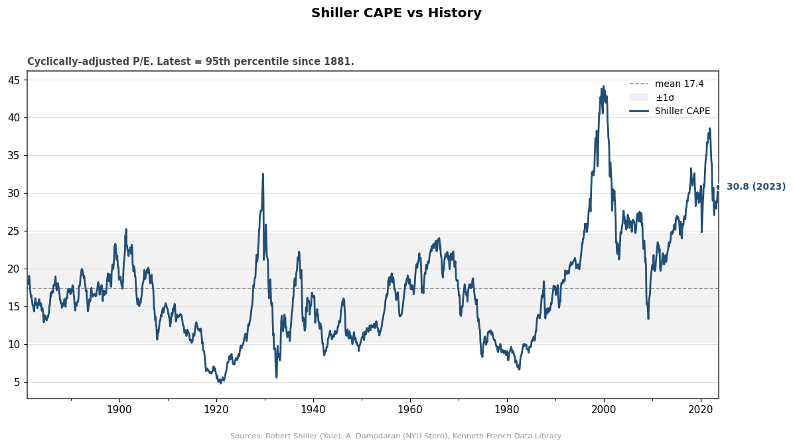
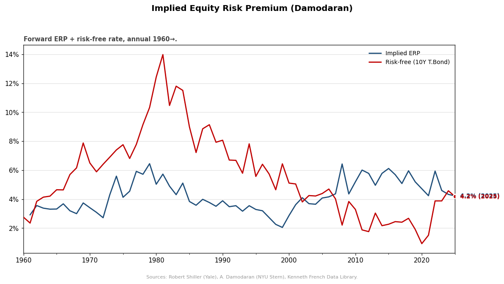
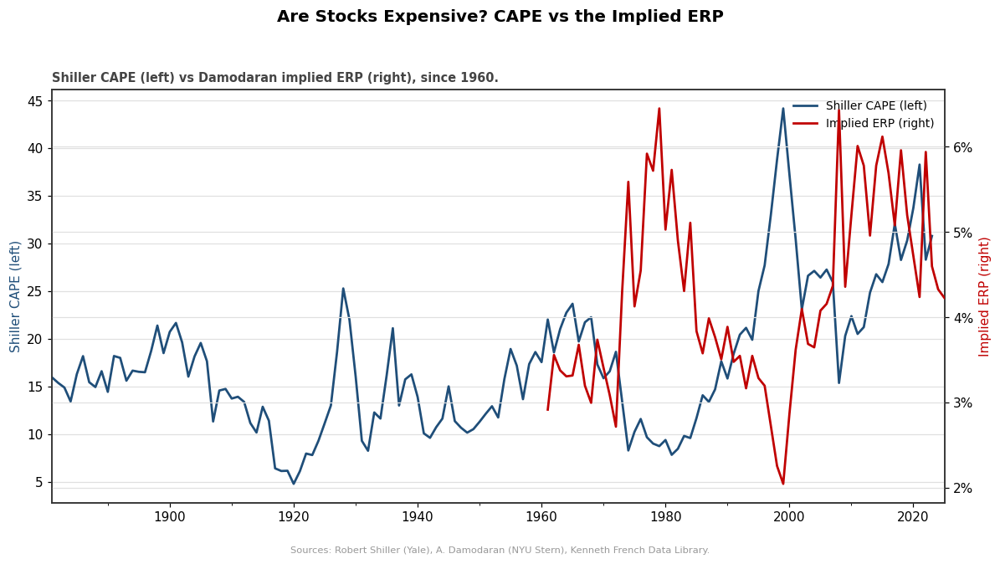
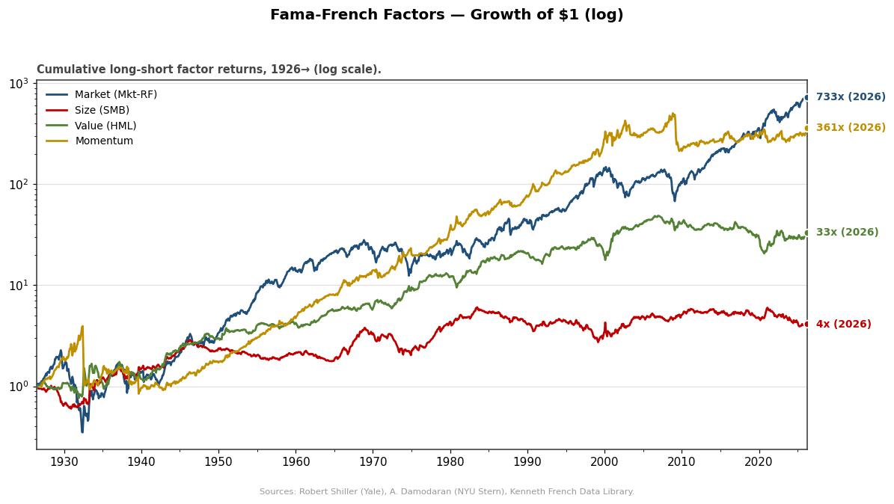
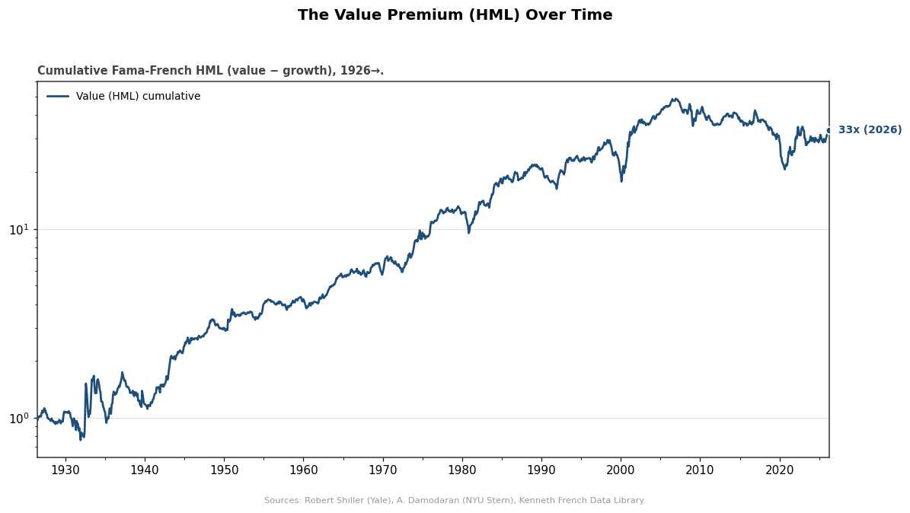

Cyclically-adjusted P/E (10-yr real earnings). Latest is in the 95th percentile of its 1881→ history.

The forward-looking ERP the market is pricing in, back-solved from S&P prices/cashflows.

High CAPE + low ERP = richly priced. The two valuation lenses, aligned.

Cumulative factor returns since 1926. Log scale — a straight line is a constant compound rate.

Cumulative value-minus-growth return. The long plateau/drawdown since ~2007 is the 'value winter'.
